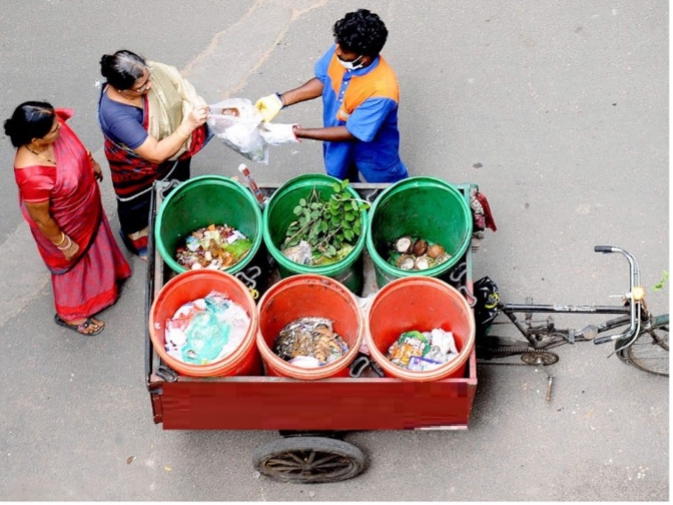
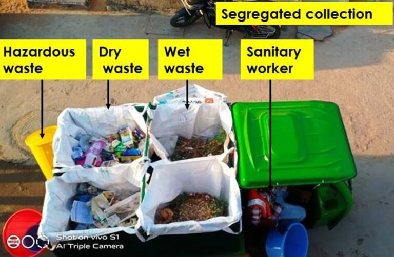

IEC (Information Education and Communication)



Cube Welfare Society (CWS) established in 2019 to help in developing Clean and Healthy communities. To achieve this, CWS actively participate in Information Education and Communication (IEC) campaigns and develop IEC tools for faster, better and clear communication. Major activities covered under this are Mensuration health, Spot Fixes, Waste Segregation, Door to Door Interpersonal Campaigns, IEC activities for Waste management and processing of waste, Grey Water Management, Organic food sourcing, Medical Campaigns and Green drive plantations.